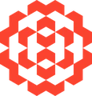

Sunollo
Website Redesign
2024-2025|UX/UIBRAND-TO-UIWEB
Redesigned Sunollo’s website to embody their updated brand identity, while simplifying product discovery to drive lead generation.
SINGAPORE・
Over the past 3 years, I’ve leveraged my computer engineering background to design intuitive UI/UX systems, focusing on organized information architecture and seamless processes.
I believe the best work is objective and precise. My approach is highly detail-driven and systematic, relying on concrete data and established strategies to solve complex user problems.
A mixed bag of professional and personal projects.
Some shipped, some just for fun.
© 2026 ELAINE BAYHON
Elaine said, "build it like this." AI said, "okay."
SINGAPORE・
Elaine Bayhon